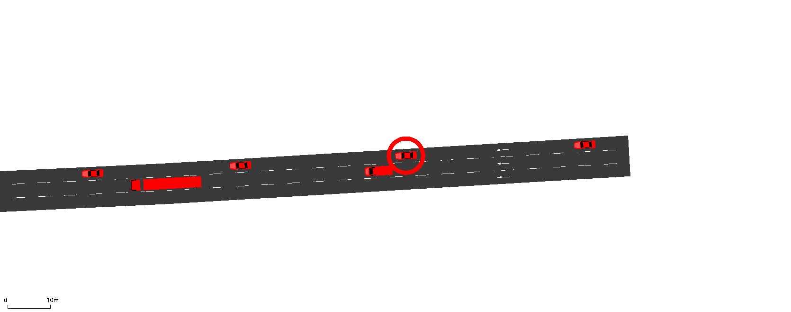
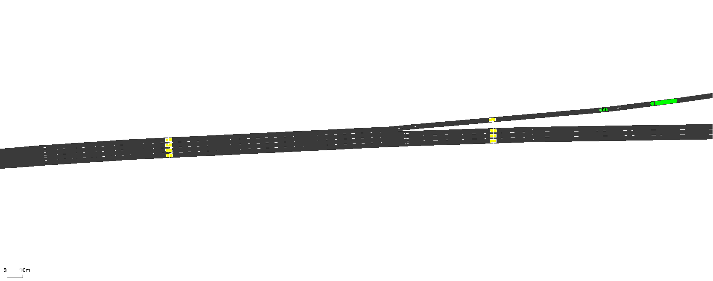
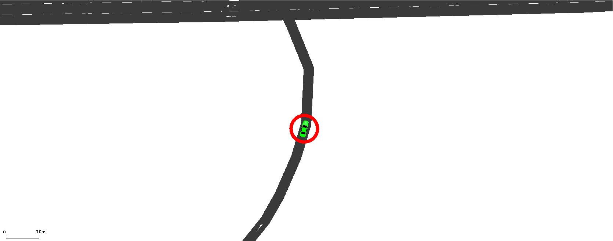

GUI & Videos
GUI Functions
Several functions are provided specifically for controlling the Graphical User Interface (GUI). More general information on using the SUMO GUI can be found at sumo.dlr.de/docs/sumo-gui.html. In order to run a simulation with the GUI active using TUD-SUMO, use:
from tud_sumo.simulation import Simulation
my_sim = Simulation(scenario_name="example", scenario_desc="Example simulation.")
my_sim.start("example_scenario.sumocfg", gui=True)
The several functions used for interacting with the SUMO GUI are listed below. The GUI itself can have multiple different views, or windows, but the default/main view is called 'View #0'. Unless new views have been manually added, GUI functions will operate on this default view.
set_view():- Sets a view's bounds and/or zoom level.
- Bounds use a tuple of two coordinates to define the new view, as in (lower-left point, upper-right point).
- The zoom level is defined in percent.
take_screenshot():- Takes a screenshot of a view in the next time step and saves the result to a file.
- If the bounds and/or zoom is not specified, the current view is used.
gui_is_tracking():- Returns whether a specific view is tracking a vehicle.
- Returns whether a specific view is tracking a vehicle.
gui_track_vehicle():- Sets a view to follow a vehicle through the network, either until it leaves the network or the tracking is manually stopped.
- The vehicle is tracked by its ID, and can be highlighted if
highlightis set toTrue. - By default, the main/default view is used. An example of vehicle tracking is shown below.
gui_stop_tracking():- Stops a view from tracking a vehicle.
- Stops a view from tracking a vehicle.
get_gui_views():- Returns a list of all views added to the GUI.
- Returns a list of all views added to the GUI.
add_gui_view():- Adds a new GUI view.
- Adds a new GUI view.
remove_gui_view():- Removes a specific GUI view.
- Removes a specific GUI view.
get_view_boundaries():- Returns the bounds of a specific view.
- Returns the bounds of a specific view.
get_view_zoom():- Returns the zoom level of a specific view.
- Returns the zoom level of a specific view.

while my_sim.curr_step < 500:
my_sim.step_through()
if my_sim.curr_step == 100:
# Set the default/main view boundaries to (min_x: 0, max_x: 200, min_y: 0, max_y: 200) and zoom to 500%
my_sim.set_view(bounds=((0, 0), (200, 200)), zoom=500)
# Take a screenshot of the current view settings and save it to "images/screenshot.png"
my_sim.take_screenshot("images/screenshot.png")
if my_sim.curr_step == 200:
# Set the default view/main to follow "car_0" as it travels through the network
my_sim.gui_track_vehicle(vehicle_id="car_0")
if my_sim.curr_step == 300:
# Set the default view/main to stop following "car_0"
my_sim.gui_stop_tracking()
Recording Videos
The Recorder class can be used to record videos of the GUI through 2 functions; Recorder.record_network() and Recorder.record_vehicle(). Videos are then saved using Recorder.save_recording(). The GUI must be active to record videos.
from tud_sumo.videos import Recorder
from tud_sumo.simulation import Simulation
my_sim = Simulation(scenario_name="example", scenario_desc="Example simulation.")
my_sim.start("example_scenario.sumocfg", gui=True)
recorder = Recorder(my_sim)
Recordings are defined by a unique recording ID, which allows for multiple recordings to be made at the same time on different views. Videos are made by taking screenshots at each time step, which can then be joined together to create the final video. The frames are saved to a file called {recording_id}_frames, although this can be changed using the frames_loc parameter. The file is always created when the video is started, and is deleted by default, along with the individual frames, once the recording is over.
Multiple recordings can be done simultaneously, although they should begin at the same time as each requires a new view to be created. Adding new views changes the aspect ratio of already existing views, which prevents the final video from being created.
To record a static recording of a specific part of the network, use Recorder.record_network(). This is based on a bounds and zoom parameter, as shown below. speed can also be changed. By default, videos are real-time when speed = 1, although increasing this value acts as a multiplier on the FPS (FPS = speed / step_length).
recording_id = "network_test"
while my_sim.curr_step < 500:
my_sim.step_through()
if my_sim.curr_step == 100:
# At t=100, start recording a video with boundaries (min_x: 0, max_x: 200,
# min_y: 0, max_y: 200) and zoom 500%. The frames will be saved to a directory
# named 'frames' instead of the default 'network_test_frames'
recorder.record_network(recording_id = recording_id,
bounds = ((0, 0), (200, 200)),
zoom = 500,
speed = 16,
frames_loc = "frames"
)
To finish the recording and save the final video, use Recorder.save_recording() as below. This will delete the frame files and save the video. By default, the video is called {recording_id}.mp4. Videos can currently be created in an '.mp4', '.avi' or '.gif' format and must be at least 3 time steps long.
if my_sim.curr_step == 300:
recorder.save_recording(recording_id, video_filename="video.mp4")

Alternatively, to record a vehicle as it travels through the network, use Recorder.record_vehicle() as below. By default, the recording will finish once the vehicle leaves the network, although it can be ended early using Recorder.save_recording(). The video filename used can be defined at the start of the recording.
recording_id = "vehicle_test"
while my_sim.curr_step < 500:
my_sim.step_through()
if my_sim.curr_step == 100:
# At t=100, start recording a video of "car_0", with zoom 1200%. The
# frames will be saved to a directory named 'frames' instead of the
# default 'vehicle_test_frames'
recorder.record_vehicle(recording_id = recording_id,
video_filename = "video.avi",
vehicle_id = "car_0",
zoom = 1200,
speed = 20,
frames_loc = "frames"
)
